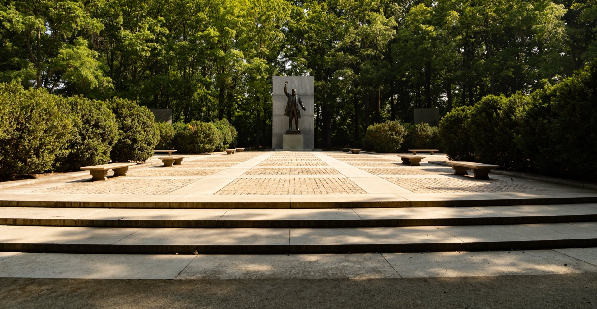
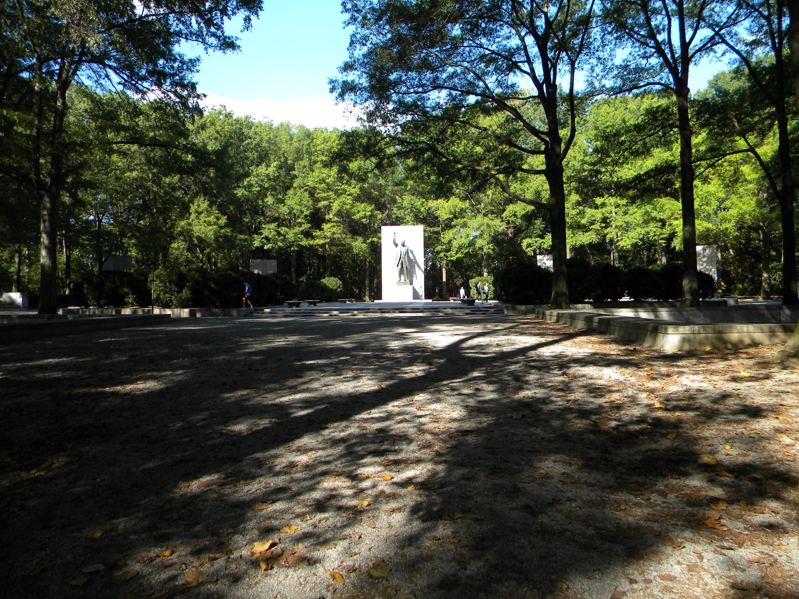
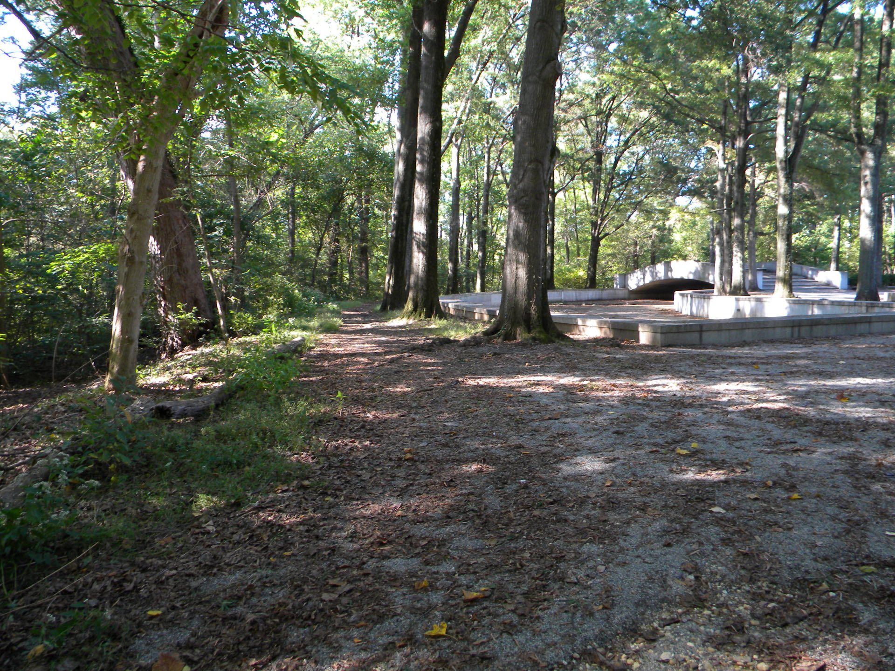

Swamp Trail
1½ miA loop through swampy woods and cattail marsh. Part pea gravel, part boardwalk.



National Memorial · Potomac River · Washington, DC
An 88-acre island of forest and marsh, left wild on purpose, a short walk from the city's busiest bridges.
Open daily 6 a.m.–10 p.m.
Photo: NPS
See it
Official photographs from the National Park Service.


A landscape with layers
The island has carried many names — My Lord's Island, Barbadoes, Analostan, Mason's Island — before Congress named it for the 26th president and the conservationist who set aside 230 million acres of public land.
Algonquian-speaking people lived along this stretch of the river. The name Anacostia comes from anaquashatanik, “a town of traders.”
A private estate with the Mason mansion and a ferry landing. The Upland Trail now loops around the mansion's former site.
Camp Greene and a Freedman's Camp were established on the island.
Landscape architect Frederick Law Olmsted Jr. and the Civilian Conservation Corps transformed overgrown farmland into the woodland and swamp you walk through today.
On Roosevelt's birthday, the plaza opened with Paul Manship's 17-foot bronze statue, flanked by fountains and granite tablets of Roosevelt's own words.
On foot only
Bicycles aren't allowed on the island — the trails weren't built for them. Racks are near the footbridge.
A loop through swampy woods and cattail marsh. Part pea gravel, part boardwalk.
Runs the length of the island and loops around the former site of the Mason mansion.
Pea-gravel path through the island's center to the memorial plaza, statue and fountains.
Explore the map
Pick a trail to see it on the map. Together they add up to 2⅝ miles, all of it on foot.
Passes through swampy woods and cattail marsh. The surface is part pea gravel and part boardwalk.
Look for: the cattail marsh and the stretches of boardwalk.
A pea-gravel path through the center of the island that leads to the memorial plaza, with its statue and fountains.
Look for: the 17-foot bronze statue of Roosevelt and the fountains around the plaza.
Runs the length of the island through the woods and loops around the former site of the Mason mansion.
Look for: the loop where the Mason estate once stood.
Plan a visit
The island is in Washington, DC, but you reach it from the Virginia side of the river.
The parking lot is reachable only from the northbound George Washington Memorial Parkway. After the Roosevelt Bridge, watch for the exit sign and turn right into the lot (about 90 spaces). Park Police regularly ticket cars parked on the grass.
It's a 10–15 minute walk from Rosslyn station. Head for Key Bridge, then take the connecting trail from the bridge's downstream side to the parking area and footbridge.
The Mount Vernon Trail ends here at its northern terminus. Lock up at the racks by the footbridge — bikes can't go onto the island.
Find it
What visitors say
Real reviews from people who have walked the island, straight from Google Maps.
Ratings and reviews from Google Maps, shown as written by each reviewer.
Where this information comes from
Visitor details — hours, fees, trails, directions and history — come from the
National Park Service page for Theodore Roosevelt Island
(park code this) and were checked against the NPS API through the
nps MCP server’s park-details tool. Photos are NPS photographs.
We also searched the District's Parks and Recreation Areas dataset. It returned no record for the island: that layer covers properties run by DC's Department of Parks and Recreation, and Roosevelt Island is federal land managed by the National Park Service.
Always check the NPS alerts & conditions page before you go — the island can flood.